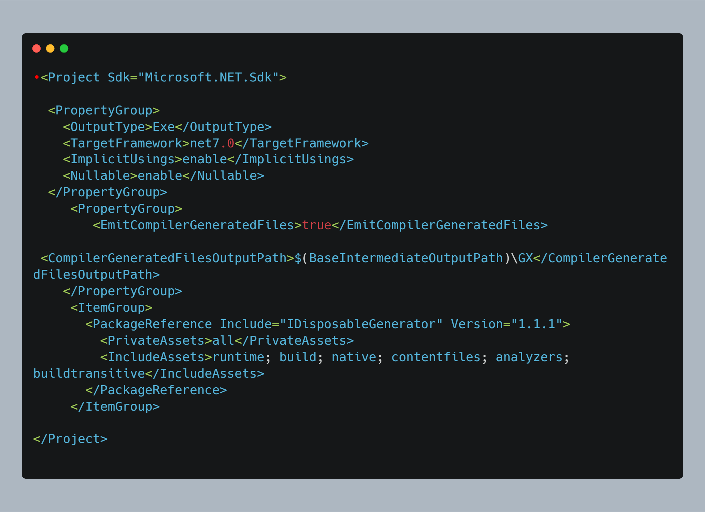
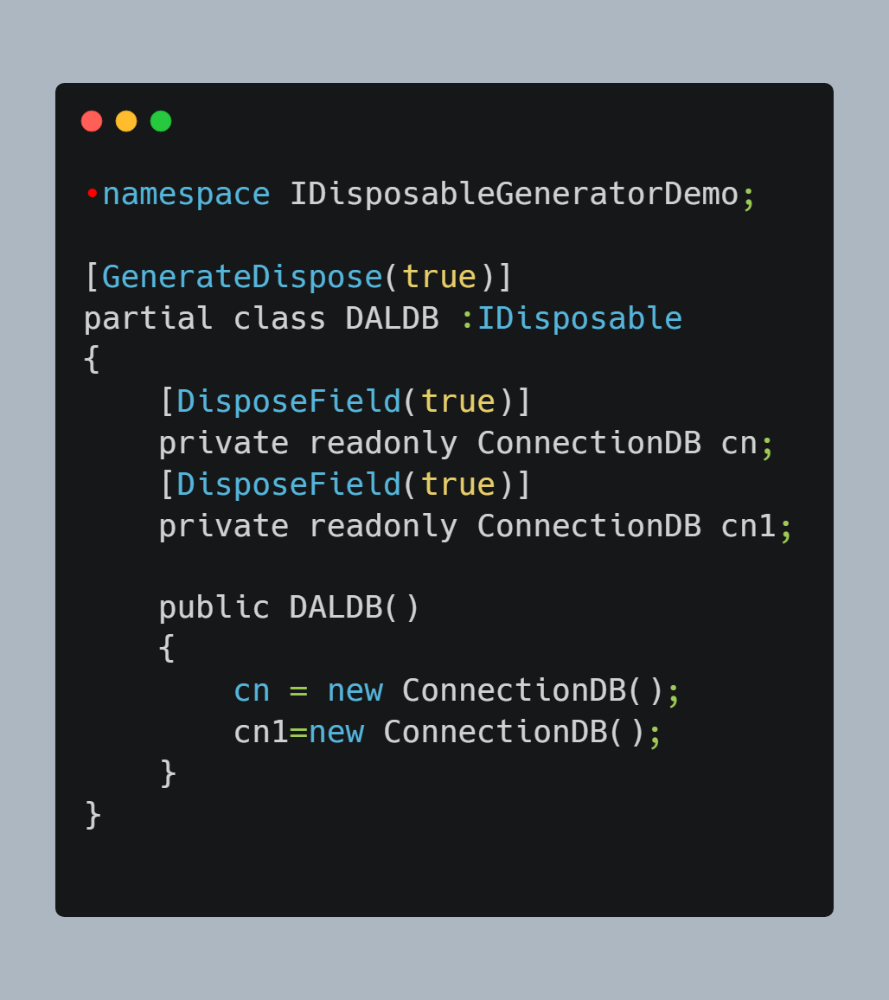
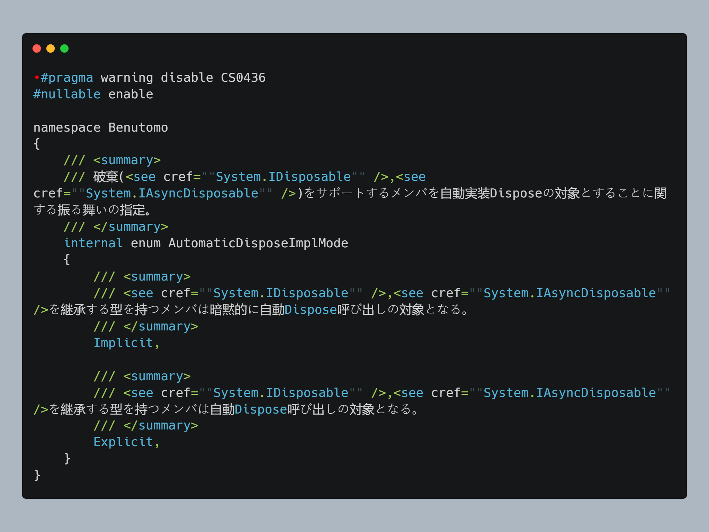
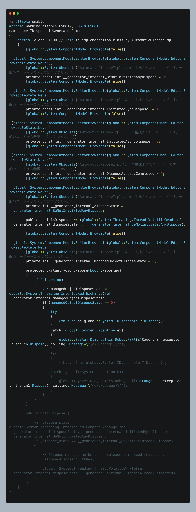
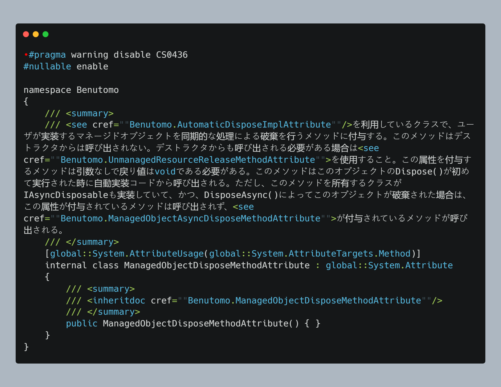
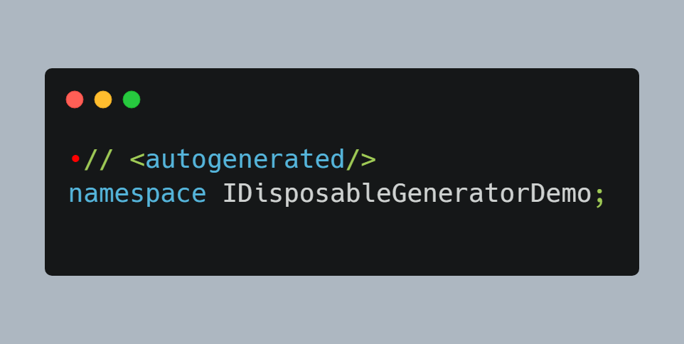
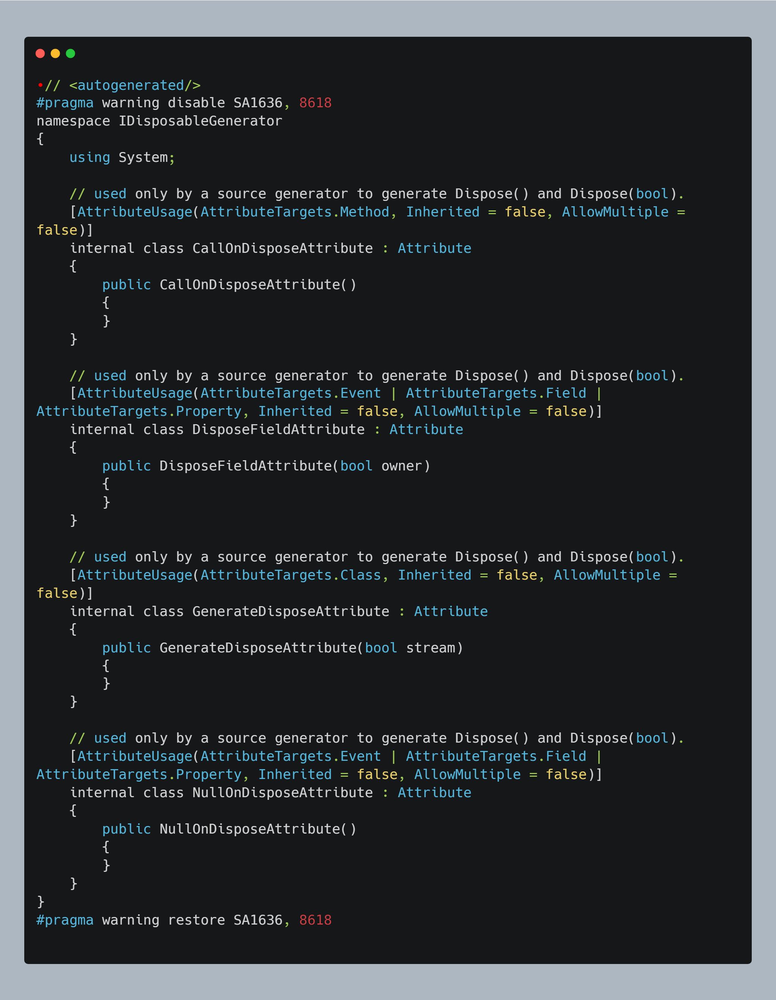

RSCG nr 69 : IDisposableGenerator
Info
Nuget : https://www.nuget.org/packages/IDisposableGenerator/
You can find more details at :
Author :
Source :
About
https://github.com/Elskom/IDisposableGenerator
How to use

This was for me the starting code
I have coded the file Program.cs

I have coded the file DALDB.cs

I have coded the file ConnectionDB.cs

And here are the generated files
The file generated is AutomaticDisposeImplAttribute.cs

The file generated is AutomaticDisposeImplMode.cs

The file generated is DisableAutomaticDisposeAttribute.cs

The file generated is EnableAutomaticDisposeAttribute.cs

The file generated is gen_DALDB_IDisposableGeneratorDemo_AutomaticDisposeImpl.cs

The file generated is ManagedObjectAsyncDisposeMethodAttribute.cs

The file generated is ManagedObjectDisposeMethodAttribute.cs

The file generated is UnmanagedResourceReleaseMethodAttribute.cs

The file generated is Disposables.g.cs

The file generated is GeneratedAttributes.g.cs

You can download the code and this page as pdf from
https://ignatandrei.github.io/RSCG_Examples/v2/docs/IDisposableGenerator
You can see the whole list at
https://ignatandrei.github.io/RSCG_Examples/v2/docs/List-of-RSCG